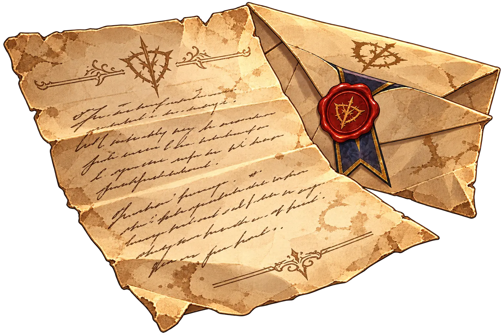
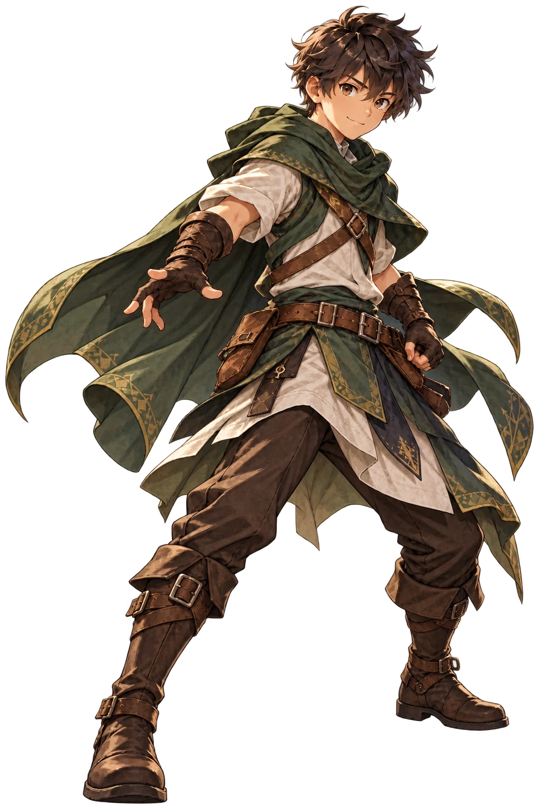
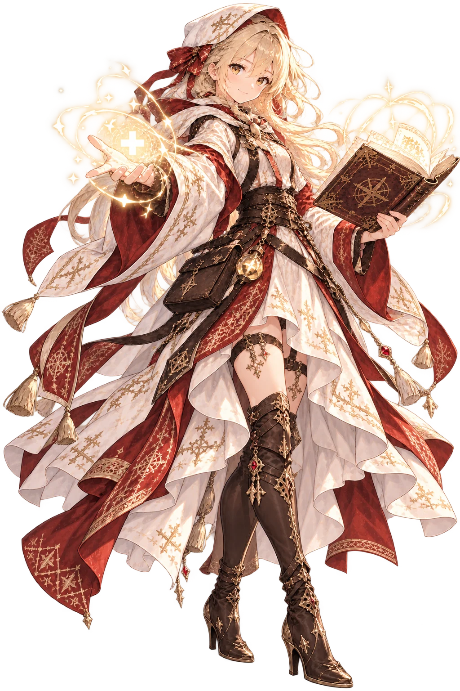
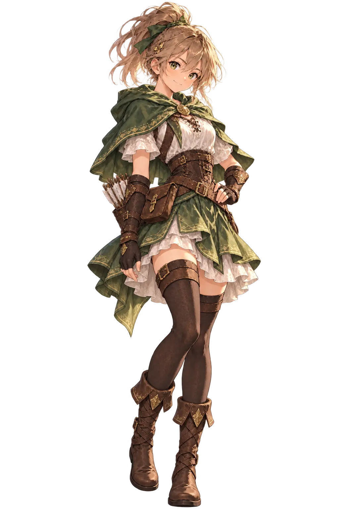

Chapter 1 — Forest Path
The opening tutorial battle. Sam reads the official letter, sees an unnatural light over the northern mountains and steps onto the road to Aster.
ACT I — TOWARD ASTER
Sam leaves his village after receiving a sealed letter announcing the death of his father, Captain of the Guardians of Aster. On the road north he finds Lira, later meets Rhea and reaches the city that hides the truth.

INITIAL PREMISE
Before dawn, a sealed letter arrives from Aster. It states only that Sam's father died in service to the city. There is no body, no explanation and no peace. When a pale light rises beyond the northern mountains, Sam chooses the road to Aster.
“No body. No explanation. Just a seal and a few lines.”
ACT I STRUCTURE
Act I contains 6 chapters: 2 story chapters and 4 combat chapters. It introduces Sam, Lira and Rhea while building the mystery around Aster.
The opening tutorial battle. Sam reads the official letter, sees an unnatural light over the northern mountains and steps onto the road to Aster.
Sam meets Lira, a healer and scholar of runes. She is studying symbols beneath the ruined crossing and decides to travel with him.
An ancient guardian awakens. The battle proves that the crisis is reviving something far older than the Kingdom of Aster.
Refugees and wounded patrols flee from the capital. Sam defends civilians from corrupted creatures and learns the Guardians have scattered.
Rhea stops the party from above the tower. She confirms Sam's father was known to every patrol and that his death was strangely secretive.
The party clears the breached gate, reaches the snowy threshold of Aster and prepares to step into the city's deeper mystery.
THE FIRST COMPANIONS



TURNING POINT
From the old watchtower the group sees Aster under an unnatural runic glow. Rhea reveals that orders surrounding the Captain's death came sealed from the city itself. The final road leads through the breached Northern Gate and into Act II.
“Whatever the answer is, it starts inside that city.”
ACT I COMPLETE
The road ends at the city gates. The mystery of Aster begins inside.